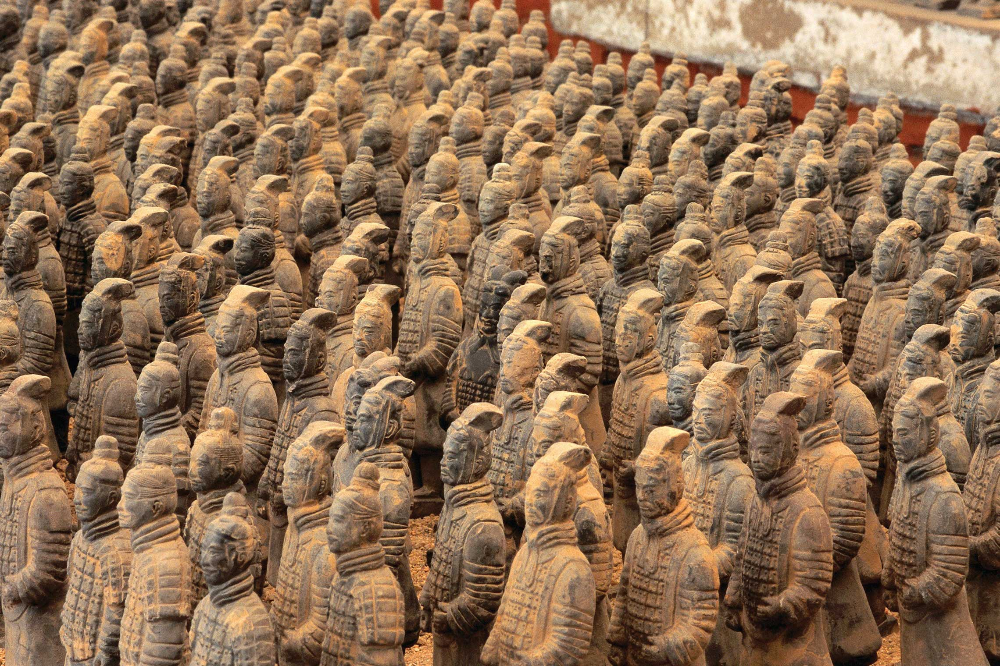

Терракотовая армия
История открытия
Терракотовая армия была случайно обнаружена в 1974 году местными крестьянами, копавшими колодец недалеко от города Сиань. Это археологическое открытие стало одним из самых значимых в XX веке.
Армия была создана в 210-209 годах до н.э. для сопровождения в загробной жизни первого императора объединённого Китая Цинь Шихуанди. На создание этого грандиозного мавзолея ушло около 38 лет и труд 700 тысяч рабочих.
Описание комплекса
Терракотовая армия состоит из более чем 8000 полноразмерных статуй воинов, 130 колесниц с 520 лошадьми и 150 кавалерийских лошадей. Все фигуры выполнены вручную и имеют уникальные черты лица, что делает каждую статую неповторимой.
Комплекс разделен на три основные раскопа:
- Раскоп №1: Самая большая яма с пехотой (около 6000 фигур)
- Раскоп №2: Содержит кавалерию, колесницы и лучников
- Раскоп №3: Командный пункт с высокопоставленными офицерами
Технология изготовления
Каждая фигура создавалась по сложной технологии:
- Изготовление отдельных частей тела (ноги, торс, руки, голова)
- Сборка частей вместе с использованием глиняного раствора
- Детальная проработка черт лица и прически
- Обжиг в печах при температуре около 1000°C
- Покраска яркими минеральными красками (большая часть краски не сохранилась)
Изначально все воины были вооружены настоящим бронзовым оружием, большая часть которого была разграблена после падения династии Цинь.
Информация для посетителей
Часы работы:
16 марта - 14 ноября: 8:30-18:00
15 ноября - 15 марта: 8:30-17:30
Стоимость билетов:
Взрослые: 150 CNY (около $23)
Дети (до 1.4м): бесплатно
Как добраться:
Из Сианя: автобусы 306, 307, 914, 915
Время в пути: около 1 часа
Советы:
• Лучшее время для посещения - утро
• Возьмите аудиогид (доступен на русском)
• Посетите музей бронзовых колесниц
Интересные факты
Разнообразие лиц
Каждое лицо воина уникально. Археологи считают, что скульпторы лепили их с реальных людей.
Незавершенные воины
Около 30% армии остались незавершенными из-за внезапной смерти императора.
Разрушение армии
Большая часть фигур была разбита во время крестьянского восстания через 5 лет после создания.
Современные исследования
Раскопки и реставрация продолжаются до сих пор. Ежегодно находят новые фигуры.